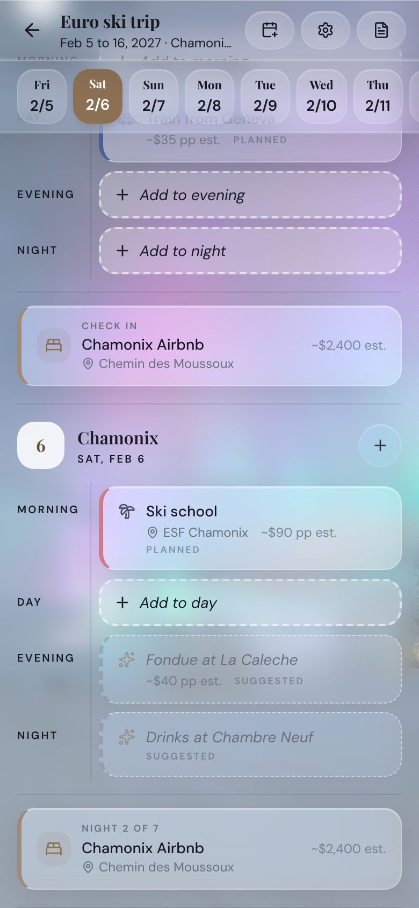
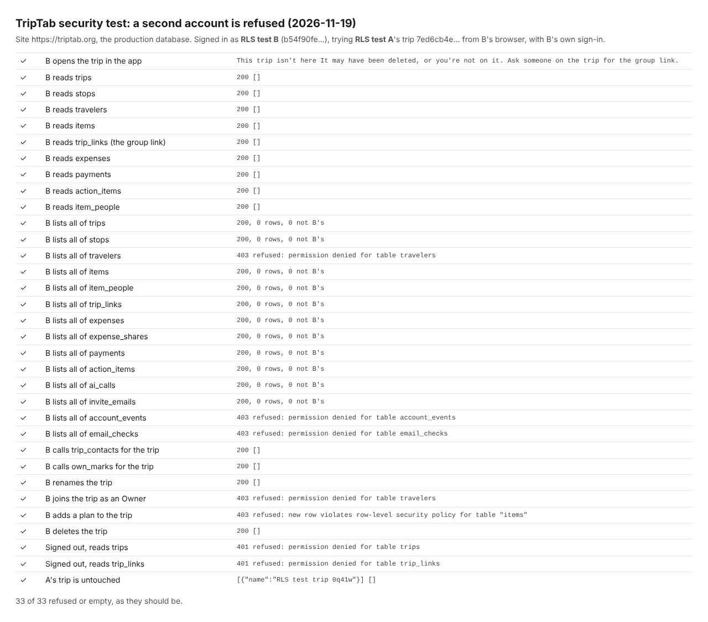

TripTab
For friends on a group trip: confirming a plan logs who paid and who joined in the same step, so the settle-up is always current and nobody rebuilds a spreadsheet afterward.
Product Showcase (Prototype / Live App / 2-Min Video)
Current Status: Build 3: live at triptab.org (works on a phone). Every merge to main deploys there once the tests pass, each pull request gets its own Preview on a separate test database, and a security audit is in SECURITY.md.
Demo: the Euro ski trip. The itinerary runs day by day with the actual day on each chip, Morning to Night, and where everyone's staying; Suggested plans have a dotted outline and say who suggested them, Planned ones are solid with a colored stripe, and Confirmed (paid) ones carry a green check. The AI button takes a booking (pasted, a PDF or photo, or forwarded to the trip's own email address) or gives ideas, and a trip can be started by describing it in your own words. Money: confirm a plan with its cost, who paid and who joined; record payments mid-trip, with a Venmo link or Zelle details; Settle up shows the fewest payments.


Living PRD (Product Requirements Document)
1. Target User & The Job to Be Done
Problem: On group trips, plans live in the group chat and money lives in Venmo requests. Nobody knows which plans are locked, who paid, or who owes whom until someone builds a spreadsheet after the trip.
Who is this for? My friends planning a Euro ski trip (about Feb 5 to 16, 2027). I'm on the trip. Lodging deposits, flights and lift passes get paid and split over the next few weeks, so the group can use TripTab before the trip as well as during it.
The painful "Before" workflow: Plans get agreed in the chat. One person fronts the dinner or the tickets. After the trip, someone scrolls back through the chat and re-enters every cost, who joined and who paid into Splitwise or a sheet, and the group argues about what's missing.
The "After" workflow with this product: Ideas go in as Suggested, typed or straight from a booking email. When a plan happens, one tap confirms it with the real cost, who paid and who joined, and that logs the expense. Payments made along the way are recorded as they happen, and the settle-up screen always shows the fewest payments that square everyone.
2. Scope & Explicit Non-Goals
- In Scope (Core Workflow): unchanged: plan, confirm, split, settle. 1. Start a trip with dates and stops (or by describing it) and get the group on it: added directly, or one group link where people pick their name, as Owners or Viewers. 2. Add plans to the day-by-day itinerary as Suggested or Planned, by hand or from a booking. 3. Confirm a plan: the real cost, who paid, who's in; it becomes an expense, split evenly or by shares, percent or exact amounts. 4. Settle up: balances, payments recorded mid-trip, and the fewest payments left.
- Added in v3, from the 11/17 pod test and my own use: Google sign-in and emails from triptab.org (confirm your email, reset a password, invites); recording payments with Venmo and Zelle; AI help, each piece after a 10-case eval (import a booking, plan ideas with a day for each, describe your trip, and each trip's own email address for forwarded bookings); costs in another currency; drag and drop; a Show me around guide.
- Out of Scope #1 (unchanged in v3): AI that invents a whole itinerary. Describe your trip only sets up what you wrote, and every AI suggestion waits on a review screen before anything is saved.
- Out of Scope #2: Bookings or in-app payments. TripTab says who pays whom; Venmo or Zelle moves the money.
- Out of Scope #3: A native iOS or Android app. TripTab is a phone-friendly web app.
3. How It Works Under the Hood & Riskiest Assumption (Week 2+)
Riskiest Assumption (unchanged in v3): friends actually get into one shared trip. The spring version had 38 trips and 0 accepted invites, and every other feature assumes the group is on the trip. Evidence so far: podmates joined a test trip through the group link on 11/17, and one who claimed a spot on their phone couldn't get in on their laptop (the link said the spot was taken). That led to Google sign-in and a Sign in prompt on a taken spot. On triptab.org since 11/18, PostHog shows 2 group link visits and 1 name claimed: too few to call. The ski group is the real test.
Simple Architecture (v3): [Traveler's browser] → [triptab.org: the React app as static files on Cloudflare Workers] → [Supabase production: Postgres with row-level security on all 18 tables, sign-in with email or Google, Edge Functions] → [Claude Haiku 5.5, called only from the Edge Functions] → back to the browser. Emails go out from triptab.org through Resend; bookings forwarded to a trip's address come in through Cloudflare Email Routing and a small Worker. [PostHog] records events and session replays, with group links, one-time codes, emails and phone numbers taken out first.
Hosting choice: Cloudflare Workers with static assets at triptab.org (Cloudflare's recommendation for new projects, over Pages), replacing GitHub Pages: a domain of its own (TripTab's emails come from it), a Preview per pull request, and deploys that run the tests first. Cloudflare's Workers Builds deploys, because a GitHub Actions deploy needed a secret only the class organization's admins can add. Rollback is one click in Cloudflare's Deployments list; tried on 11/22, the site switched builds within seconds and back.
Database choice: two free Supabase projects. TripTab is production, for real users only. TripTab dev takes every local run, test, eval and Preview. Schema changes are migrations in the repo; they reach dev from a pull request's build and production only from a merge to main, after my OK. The coding agent's access to production is read-only.
Delivery pipeline: every pull request runs lint, 299 unit tests, a type check and 194 live database security tests against TripTab dev, in GitHub Actions and again in Cloudflare's build, then gets a Preview. A merge runs the same checks, applies production's migrations and functions, deploys, and a smoke check confirms triptab.org serves the new build. A failing check means no deploy.
Security choices: the database decides who can see or change what, never the browser: row-level security on every table, and Owner checks inside every function that runs with raised rights. Secret keys live only in Supabase's and Cloudflare's secret stores; the site ships only public keys. AI has a $7 daily cap for the app, 20 calls a person a day, and a $100 monthly hard limit at the provider. The audit (SECURITY.md) ran 16 attacks and two code reviews and fixed 13 findings, four of them serious; a second account is refused everything on someone else's trip on the live site, 57 of 57 checks.
One action, end to end (adding a plan): the owner taps a Morning slot and types "Ski school" → the app saves it to Supabase as they type, with the owner's sign-in token → the database checks the owner is an Owner on this trip → the plan is saved as Suggested → the app redraws the day with the plan in a dotted outline → PostHog records plan added.
How I'll know it works: the ski group gets onto the trip through the group link without help, and confirms plans as they're paid for (PostHog: group link opened → name claimed → plan confirmed).
4. Unit Economics & Analytics Snapshot (Updated Weekly)
Weekly Build Log
Build 1 · Intent.md & Throwaway Prototype (Due Nov 9)
- What shipped: PRD v1 and a local prototype of the core workflow: suggest plans, confirm one with cost, payer and who joined, and see balances plus the fewest payments to settle. Eight unit tests cover the split and settle-up math (
npm test). - Things learned with AI: from the Terminus terminal game.
- Seeing with the terminal:
lsandcatlet me see what's in a folder and in a file. Before, it always felt like I was running blind, mainly copy-pasting commands from Claude. >vs>>is critical:>overwrites a file and>>adds to the end of it. A single missed key in the terminal can be super dangerous.- Tab completion: when files have similar names, type the first letter and press Tab to complete up to where the names differ, then type the next letter or two and press Tab again.
- Seeing with the terminal:
- What broke / changed in PRD: Accounts moved into scope: friends join a trip and add their own plans and expenses (the prototype still adds travelers by name). Narrowed the spring version (AI itinerary generator, chat, packing lists, budgets) to one job: confirm → settle. Money is now stored in whole cents so $100 split three ways is exactly $33.34 + $33.33 + $33.33. The settle-up column was squeezed by the plan form at desktop widths; fixed the grid.
- Cost & time this week: Agent: Claude, on a Claude Max plan ($100/month), so $0 extra for this build · about 5 hours
Build 2 · Smallest Local Version & PostHog (Due Nov 16)
- What shipped: a rebuild on a real backend. Supabase (database, sign-in, row-level security) replaces Build 1's browser storage. Start a trip with dates and stops, add people directly as Owner or Viewer, or send one group link where people pick their name. The itinerary is a day-by-day timeline with the actual day on each chip (Fri 2/5), Morning, Day, Evening and Night, and where everyone's staying; Suggested plans are faint and Planned ones solid, in the spring app's look. PostHog is on this page and in the app, with events checked arriving in PostHog. Verified by 42 offline tests, 52 database tests (25 of them on who can read and change what) and click-throughs at laptop and phone width (screenshots). Local setup and project structure are in AGENTS.md. Work for Builds 3 and 4 started early (confirming a plan with its cost and split, settle-up, week view, action items).
- Things learned with AI (Cave, Week 2):
- How the frontend fetches data from the backend: the browser captures the click and the details, and the app sends them to Supabase, which checks who's allowed and stores them.
- How to find which files do what in the repo: the pages and dialogs are in
app/src, the calls to the backend inapp/src/lib/api.ts, and the backend itself insupabase/(database rules and server functions). There's no Python server. - How AI calls work on the backend while protecting the key: the key lives only in a Supabase server function's secrets, never in browser code or on GitHub.
- What broke / changed in PRD: The riskiest assumption moved from "friends will tap Confirm in the moment" to "friends get into one shared trip" (0 accepted invites in spring); the AI non-goal narrowed to full AI-built itineraries. Broke, and fixed: the PostHog code reset the visitor on every signed-out page load, which would have broken the landing-to-sign-up funnel (caught when test events arrived untagged in PostHog); a row of pill buttons sat inside a form label, so tapping the word "Kind" silently chose "Activity" (caught by an automated click-through); one pushed commit broke the production build for a few minutes; and the database refused to delete a trip that had expenses (caught while clearing test data). Partway through, the coding agent's Auto mode blocked direct pushes to
main, so later work went through a pull request. - Cost & time this week: Agent: Claude Code (Claude Max, $100/month), so $0 extra; Supabase and PostHog on free plans, $0 · about 4 hours
Build 3 · Go Live & Security Audit (Due Nov 23) · Advanced lane
- What shipped: TripTab moved to triptab.org on Cloudflare, with the whole Advanced lane: tests on every pull request in GitHub Actions and Cloudflare's build, a Preview per pull request on a separate dev database, production deploys on every merge to
mainonce the tests pass (database migrations and server functions included), and a rollback tried on the live site. 50 pull requests (#20 to #69), with commits on six separate days (11/17 to 11/22). The features from the 11/17 pod test, each live after its tests and a click-through at laptop and phone width: Google sign-in and a Sign in prompt on a taken spot; confirm-your-email, password-reset and invite emails from triptab.org; plans that save as you go, with times and parts of the day as select all that apply; recording payments with Venmo and Zelle; one AI button for bookings or ideas, a day for each idea, and starting a trip by describing it (each AI feature after its 10-case eval); drag and drop; Show me around. Then, from my own use: each trip's own email address for forwarding bookings, costs in another currency, and links and uploads on plans. The security audit is in SECURITY.md, with the Shipping and Ask me first sections in AGENTS.md.
- What I learned:
- A domain is a name plus a set of DNS records. Buying triptab.org at Cloudflare ($12) only bought the name. DNS records then point each job somewhere: the website to Cloudflare Workers, incoming email to Cloudflare's email routing, and records that prove to Resend I own the domain so it can send TripTab's emails from it. DNS changes take time to spread, which is why the first production deploy's check timed out and passed on a retry.
- Dev and production are two copies of the same app with different data. TripTab has two Supabase databases built from the same migration files in GitHub. Dev gets every test, eval and Preview; production only gets real users. A pull request's build holds a key that opens dev only, so a mistake in a branch can't reach real people, and a database change reaches production only through a merge, after it has passed on dev.
- Rolling back a deploy and backing up data are different things. Rolling back in Cloudflare switched triptab.org to the previous version in seconds, but it only changes which code is served, never the database. Supabase's free plan keeps no backups, so I made one myself with
pg_dumpand kept it on my laptop, not in the public repo, because it holds people's emails.
- What broke / changed in PRD: PRD v3 adds the hosting, database and security choices and the features from the pod test; the riskiest assumption stays "friends get into one shared trip". Broke, and fixed: a GitHub Actions deploy needed a secret only the class organization's admins can add, so deploys moved to Cloudflare's Workers Builds; the first production build's smoke check timed out while the new domain's DNS spread (the retry passed); Previews failed until the Wrangler config gained a previews block; the agent first committed public settings in
.envfiles the course's.gitignoreforbids (AGENTS.md rule 8); and the live database tests hit the dev database's sign-in limit and stopped two production builds on 11/22, so the tests now wait it out. The audit found 13 issues, four serious, none used on the live site, all fixed and live. The manual backup of production failed at first (the Supabase CLI needs Docker, which my laptop doesn't have) and was made on 11/23 with PostgreSQL's ownpg_dumpinstead; it stays on my laptop, not in the repo. The same session revoked an old Supabase token that opened the whole account and lowered Supabase's own email limit to 3 an hour. - Pod feedback (11/17): the pod tested TripTab on their phones and raised the Build 3 feature list above: a photo that waited for the place, a day for each AI idea, who suggested a plan, drag and drop, the phone dialog opening in place, the taken-spot sign-in, a guide for new users, and recording payments mid-trip. Every one of them is live.
- Cost & time this week: Agent: Claude Code (Claude Max, $100/month, shared with other work), so $0 extra. Domain: triptab.org, $12, bought 11/17 in Cloudflare (of the $50 I set aside for TripTab beyond Claude Max). AI calls: 336 this week (327 on the dev database for evals and tests, 9 on production), $0.64 at list price, matching the Claude Console day by day; $0 cash, paid from the Max plan's API credit. Cloudflare, Supabase, Resend and PostHog on free plans, $0 · about 10 hours
Build 4 · Test.py: Choose Track A or Track B (Due Nov 30)
- Shipped so far (11/23, pull requests #77 to #97): the calls I made after a product manager review of the live app, each live on triptab.org after its tests and a click-through at laptop and phone width.
- Getting friends in: an Invite the group card while you're alone on a trip; the invite page shows who invited you, who's coming and the next three plans before you sign up (never a cost); from the link to the trip with no second Join, pay step, tour or email reminder in the way.
- Your profile (You): name, Venmo, Zelle and phone kept once and filled in on every trip you join, with a lock you set: locked, no Owner can change them. An optional preferences survey (food, things to do), private by default, shapes Plan with AI as a count with no names; its eval was rerun before it shipped (12 of 12 cases, $0.22 at list price, results).
- On a phone: a bottom bar for Itinerary, Money, To do and People; pinned buttons on sheets, 44 px tap targets, empty days folded; an unsaved AI review kept on the trip.
- Help and feedback: Help on every signed-in page, with the Show me around tour any time, a written guide (How TripTab works) and Send feedback for bugs and feature requests. Private preferences reach the AI only once three people on a trip have answered, so a count can't point at one person.
- My own review, the same day: on a laptop the trip's sections are tabs across the top (Overview, Itinerary, Money, To do, People), so Money is one click away; on a phone the legend and the buttons under it are one row each; Your plans says "You're in" or "You're out" beside a Join or Drop button, where one "I'm in" label had read as both; phone numbers format as they're typed; Also forward from moved to the profile; and Stops and dates opens from Travel and lodging.
- Ready for real users: each Send feedback note is now emailed to me the moment it's sent, with Reply-To set to the sender, so I can answer the same day; and I checked that session replay records every visit to triptab.org (no sampling) before the ski trip crew arrives. A tab left open now notices when triptab.org has been updated and offers a reload (my own test note went the old way until I refreshed), so a friend never hits a bug that is already fixed.
- On a trip: who's in on a plan always matches its bill (the "Everyone" bug); Confirm and log the cost first on a Planned plan; Your plans at the top for a friend; "I want this" votes on Suggested plans; a landing page that shows the product; app errors reported to PostHog with emails, phones and links scrubbed.
- From my own ski trip setup (11/23, the spec in journal/pm-review/spec-11-23.md, pull requests #101 and on): an overnight flight keeps the times on its confirmation and lands in the right part of the next day, whatever the review did to its day; on a plan where everyone pays their own, the price and the status each person sees are their own (I'm Confirmed on the flight I booked while a friend who joined is Planned, and nobody gets my price); the trip's name opens its settings, so renaming or deleting a trip is one tap; and the to-do list sorts and filters by who has it and when it's due. Then (pull requests #103 to #108): a plan that runs across parts of a day is one card; a plan added on several days is one plan per day; a booking paid in parts has a payment schedule, with each payment on its payer's to-do list; award tickets show as points plus the cash part; import reads a screenshot of the group chat as Suggested plans; AI ideas open in Google Maps; three ways to add (Import, Add, Ask AI); and Ask AI answers with three options and a Refine box (its eval 10 of 10).
- Chosen track: B: 3 to 5 outside users and replay findings. The users are the friends on my Euro ski trip (chosen 11/23).
- Results and improvements: [Before/after evidence; for Track B, fixes to the top three friction points]
- PRD v4 changes: [What the evidence changed]
- Cost & time this week: $[0.00] · [0] hours
Build 5 · Ship.installer: Launch Ops, Rollback Check & 2-Min Video (Due Dec 7)
- Launch Ops & Safety: [Verified no exposed keys, set spend cap, tested 2-minute rollback]
- 2-Minute Video & Final Polish: [Link/embed above]
- Cost & time this week: $[0.00] · [0] hours